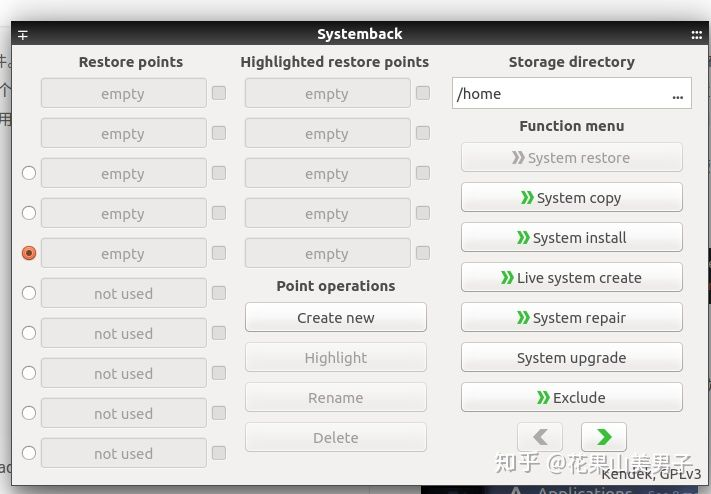
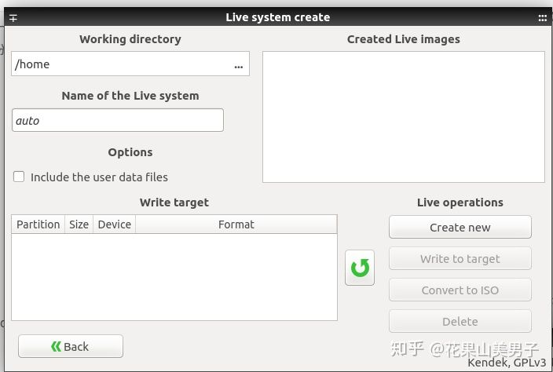
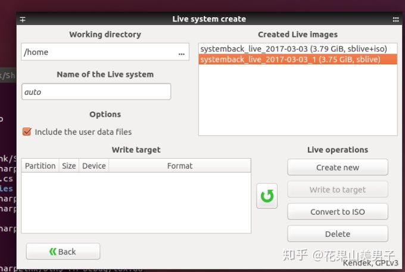

Table of Contents
参考链接
Ubuntu 16.04
sudo add-apt-repository ppa:nemh/systemback sudo apt-get update sudo apt-get install systemback
Ubuntu 18.04
sudo add-apt-repository ppa:nemh/systemback
sudo add-apt-repository --remove ppa:nemh/systemback
sudo add-apt-repository "deb http://ppa.launchpad.net/nemh/systemback/ubuntu xenial main"
sudo apt-get update
sudo apt-get install systemback
使用Live system create



镜像大于4G无法直接通过systemback导出
解压 .sblive 文件
mkdir sblive tar -xf /home/systemback_live_2016-04-27.sblive -C sblive
命名 syslinux 至 isolinux
mv sblive/syslinux/syslinux.cfg sblive/syslinux/isolinux.cfg mv sblive/syslinux sblive/isolinux
安装 cdtools
# aria2c -s 10 https://nchc.dl.sourceforge.net/project/cdrtools/alpha/cdrtools-3.02a07.tar.gz wget https://nchc.dl.sourceforge.net/project/cdrtools/alpha/cdrtools-3.02a07.tar.gz tar -xzvf cdrtools-3.02a07.tar.gz cd cdrtools-3.02 make sudo make install
生成 ISO 文件
/opt/schily/bin/mkisofs -iso-level 3 -r -V sblive -cache-inodes -J -l -b isolinux/isolinux.bin -no-emul-boot -boot-load-size 4 -boot-info-table -c isolinux/boot.cat -o sblive.iso sblive